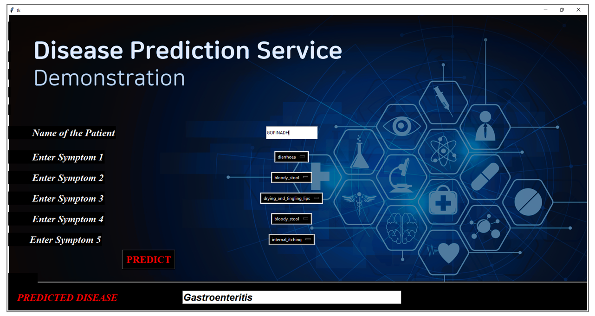
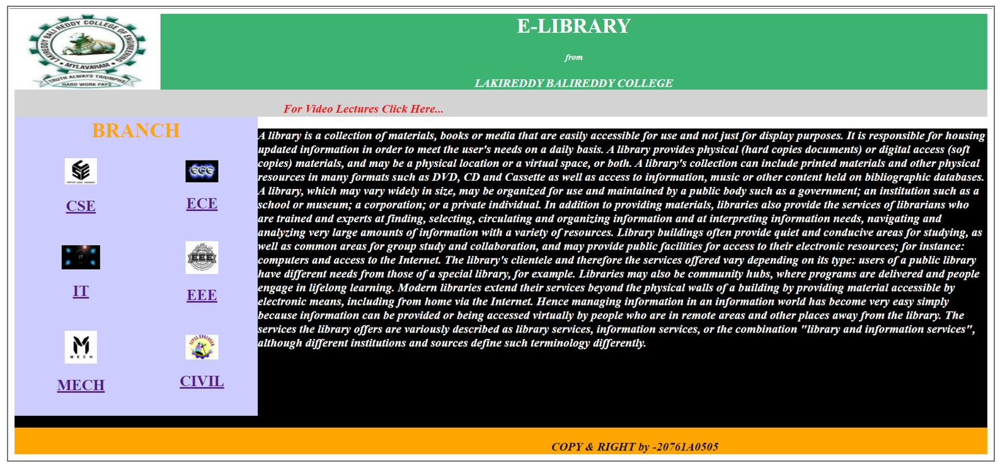

Projects
-
Project 1: [Disease Prediction Using Machine Learning]
We have been relying on doctors and physicians for generations to detect the ailments within us and give proper treatment according to the ailment detected. But no offence, this technique needs presence of the doctor in a nearby location and also in many circumstances, patients need to visit doctor which is very difficult in many situations, especially during disasters. There are many alternatives to bring doctors at home via video-conferencing and other technologies available but requires better internet connectivity. This paper describes a website in which user will add symptoms and website will predict diseases based on dataset prepared from different sources and good study and machine learning techniques applied to the dataset. Accuracy of the diseases predicted is 70-75% and we are working on increasing this accuracy. This method, if applied, will help users to predict the disease at the early stage of any ailment and they can consult doctor as early as possible.
Technologies used:
> Machine Learning
> Python
-
Project 2: [E-LIBRARY FOR B-TECH STUDENTS]
It is highly impossible to every student to buy all the Textbooks. So, we provide the Textbooks of all Courses in my website. Now everyone can refer this website in order to get their respective textbooks of their course without wasting time in search the pdf in Browser and Textbooks in Library. All the Textbooks of Entire B-tech course all provided here.
Technologies used:
> HTML
> CSS
> Java Script